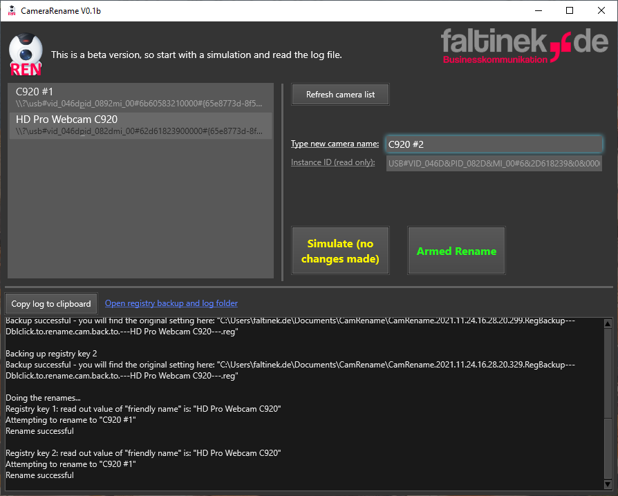
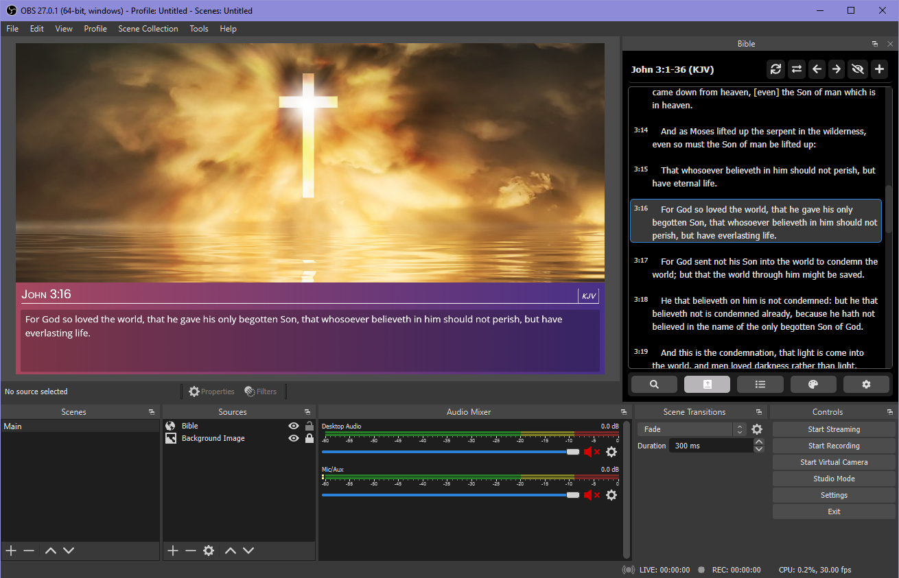
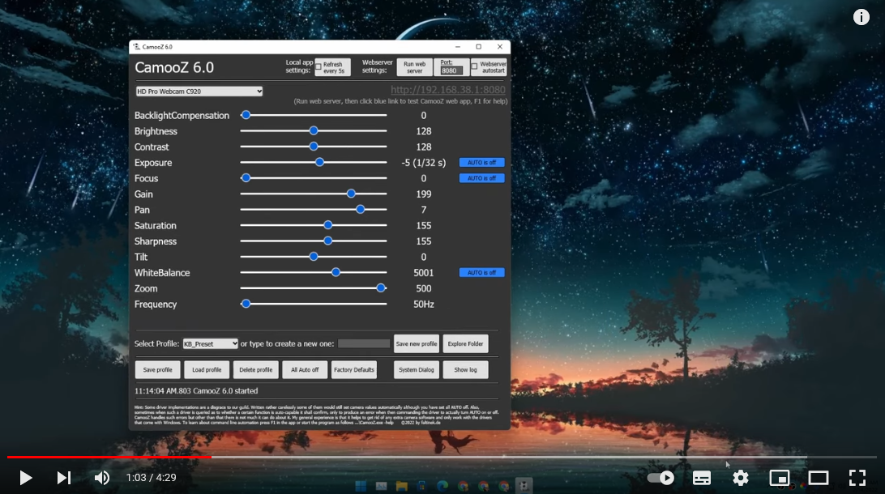
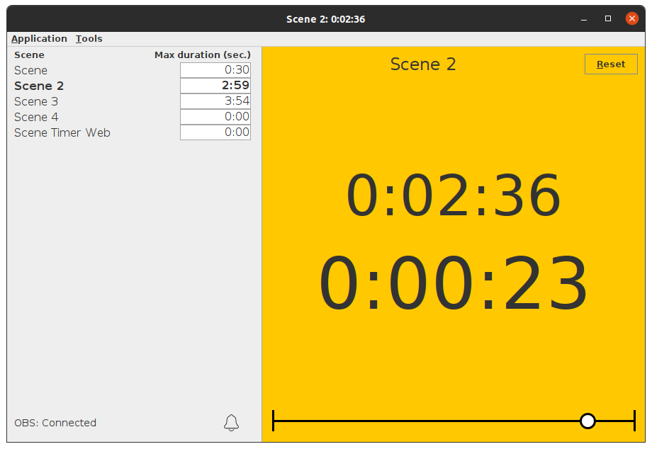
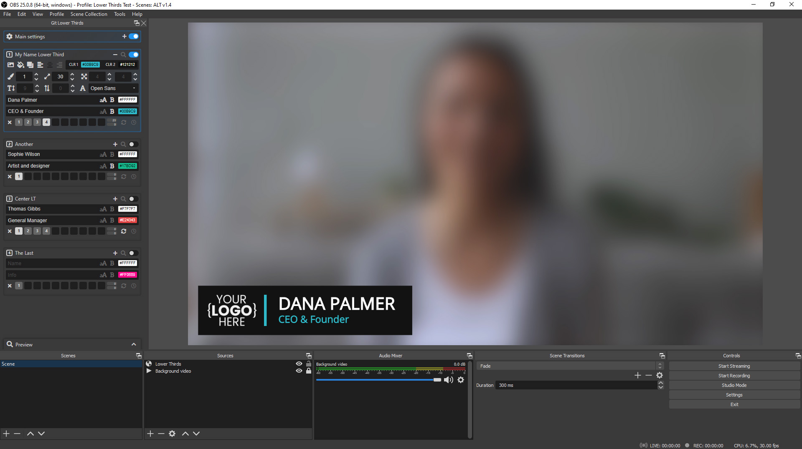
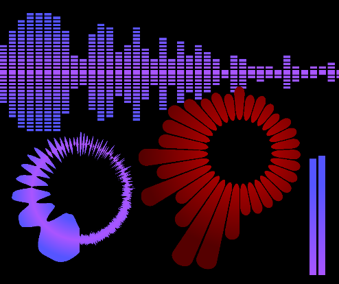
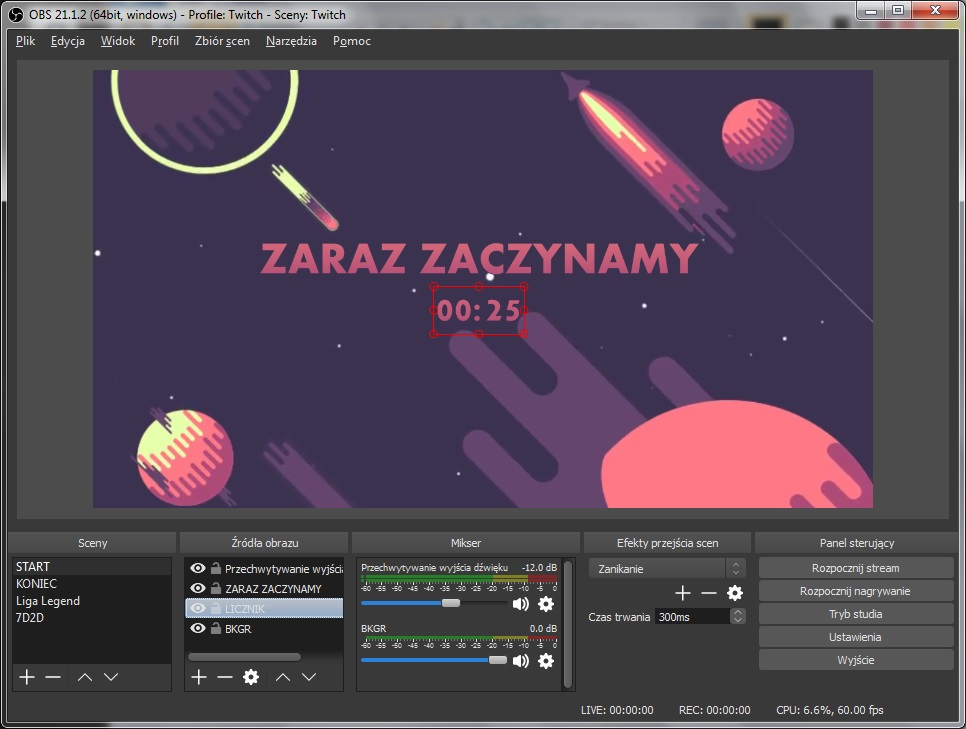
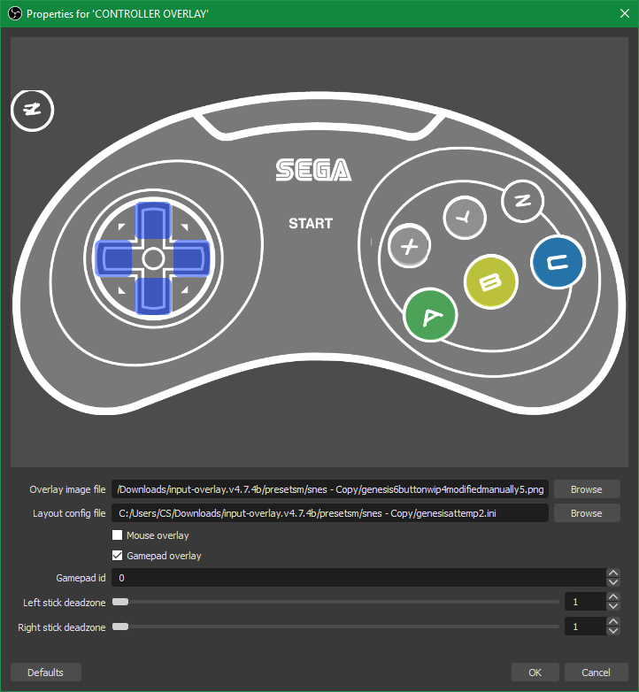
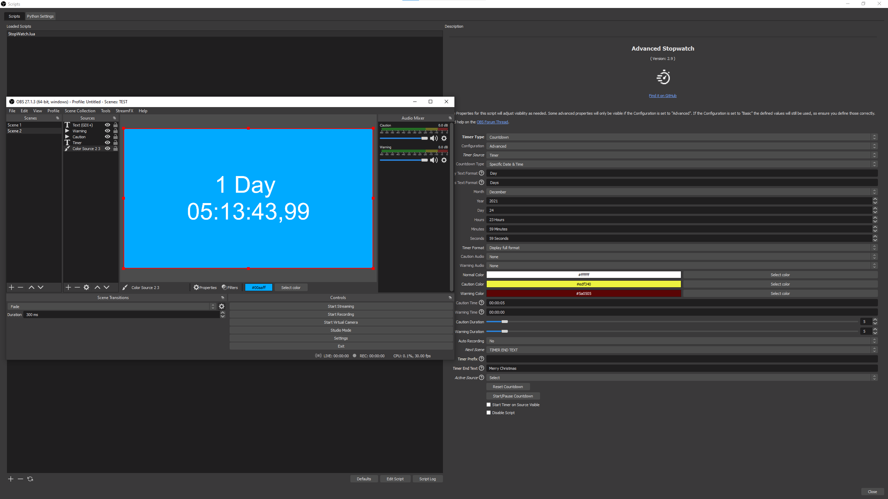
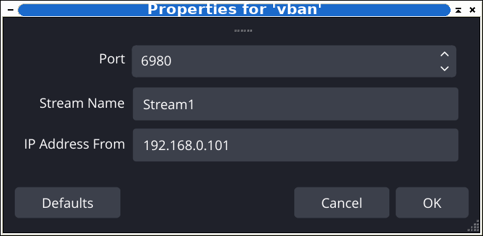

【半免费】 摄像头重命名0.2
重命名网络摄像头的工具。您的相机将保持设备管理器中的原样，但OBS、缩放、团队、WebEx、GoTo 等将在您为其指定的新名称下找到它。如果您有多个相同品牌和型号的凸轮，则特别有用。
立即下载 



OBS场景定时器v2.0.0
此基本应用程序乘以每个场景的持续时间。设置场景的时间限制后，应用程序中将显示倒数计时器。当场景接近此时间限制时，显示将变为橙色。超过此时间限制后，显示屏将变为红色。
立即下载 
Animated Lower Thirds with Dockable Control Panel v.1.6
使用此工具，您可以使用控制面板即时添加和更改自己的标题和图标并自动显示切换...
立即下载 

Countdown Timer / Stream Timer v4.0
我看到很多用户正在寻找好的“倒计时程序”，所以我决定创建一个漂亮而简单的程序，让你设置你想要的时间和倒计时结束后显示的文本...
立即下载 

综合秒表 & 倒数计时器 4.3
综合秒表 & 倒数计时器 4.3，视觉计时器 - 秒表或倒计时，视觉计时器 - 倒计时，倒计时 天、时、分、秒和毫秒，定义计时器必须过期的特定日期和时间，支持自定义时间戳格式
立即下载 
VBAN Audio Plugin 0.1.0
VBAN是一种通过配备语音助手的以太网传输音频的协议。使用此插件，您可以直接从运行另一台计算机的语音管理器接收音频。无需在流式处理电脑上配置复杂的路由。
立即下载